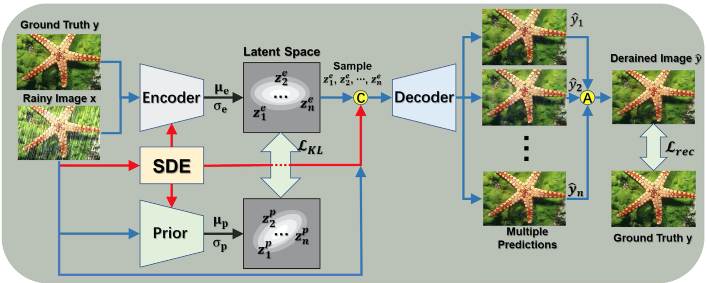

More about Variational Autoencoder
December 4, 2020
一些关于VAE的扩展知识。
不断更新中…
Training Tips #
- spectral regularization1 有利于稳定VAE的训练2
- 训练的时候可以使用KL cost annealing3的训练策略，KL项的权重一开始为0，只关注重建，等重建能力差不多了，再逐渐增加KL项的权重到1。
- 限制KL项中logvar.exp()，防止其值过大。4
- 强制clip
- weight初始化要小, 或使用$log(\sigma^2)$5
Related Models && Papers #
Beta-VAE #
beta-vae6就是给KLD加了一个权重beta。
原文还设计了一个评测指标用于评测latent representation disentangle好不好的方法，简单来说是这样的：
前提是：假设数据x是有一系列的disentangle factor y得到的，而且我们有一个ground truth simulator可以根据这些factor合成出数据x。
具体方法：
- 随机选一个factor y。 (Choose a factor y ∼ Unif[1…K])
- 对一个batch里的L个样本（一个batch中每个sample的factor都一样）：
- sample 两个latent representation（人工设计的），这两个样本，在刚刚选的那个factor上相同，其他随机。
- 用simulator合成两张图像，用之前训练好的vae-encoder预测一个latent representaiton（网络学到的）
- 计算两张图像的latent representation的差值。
- 使用L个sample差值的平均数作为一个线性分类器的输入，预测刚刚选的factor是哪个。用预测的准确性作为评测指标。
Intuition：
- 分类器会被强行设计的只有线性分类能力。
- 如果vae学习到的latent representation够好，那理论上它应该有一维就是代表factor y， 在这个维度，每个样本的两张图像的值应该是很接近的，也就是说它们的差值会很接近0，那么分类器只需要找到很接近0的那一项就可以预测出刚刚选的factor是哪个了。
Extended beta VAE #
在Understanding disentangling in β -VAE7中，作者进一步扩展了beta VAE， 方法如下：
其中C是一个逐渐增大的常数。
Intuition是，当C逐渐增大时，KLD的作用逐渐变小，重构误差逐渐占主导地位，因此我们可以学习到更好的重构图像。这点与KLD annealing正好是反过来的。
Spectral Regularization #
简单来说：spectral regularization1用于降低 sensitivity to perturbation（测试数据微小的变动会引起结果很大的变化），方法是使用一个正则化，约束网络权重矩阵的谱范数，不让其过大。
原文：To reduce the sensitivity to perturbation, we propose a simple and effective regularization method, referred to as spectral norm regularization, which penalizes the high spectral norm of weight matrices in neural networks.
设$f$是我们要学习的函数，我们的目标是要让perturbation，即 $f(\boldsymbol{x}+\boldsymbol{\xi})-f(\boldsymbol{x})$ 尽量小。通常$f$ 都是一个线性函数加一个非线性激活函数。考虑到深度学习常用ReLU等piecewise linear function[?]作为激活函数。当$\boldsymbol{\xi}$很小的，我们可以把$f$看出一个线性函数。因此我们有： $$ \frac{\left|f_{\Theta}(\boldsymbol{x}+\boldsymbol{\xi})-f(\boldsymbol{x})\right|_{2}}{|\boldsymbol{\xi}|_{2}}=\frac{\left|\left(W_{\Theta, \boldsymbol{x}}(\boldsymbol{x}+\boldsymbol{\xi})+\boldsymbol{b}_{\Theta, \boldsymbol{x}}\right)-\left(W_{\Theta, \boldsymbol{x}} \boldsymbol{x}+\boldsymbol{b}_{\Theta, \boldsymbol{x}}\right)\right|_{2}}{|\boldsymbol{\xi}|_{2}}=\frac{\left|W_{\Theta, \boldsymbol{x}} \boldsymbol{\xi}\right|_{2}}{|\boldsymbol{\xi}|_{2}} \leq \sigma\left(W_{\Theta, \boldsymbol{x}}\right), $$ 其中$\boldsymbol{\xi}$是个常数，因此，如果我们要让$f(\boldsymbol{x}+\boldsymbol{\xi})-f(\boldsymbol{x})$ 尽量小，我们应该让上界$\sigma\left(W_{\Theta, \boldsymbol{x}}\right)$尽量小。
即：我们应当约束网络权重矩阵的谱范数，不让其过大。
Ladder Variational Autoencoders #
Ladder Variational Autoencoders8
- 提出了一个类似Ladder Network的Ladder Variational Autoencoders。
具体结构：TODO
- 指出Batch Normal和KL Warm Up对训练很重要。
Re-balancing Variational Autoencoder Loss #
这篇文章9分析了RNN-based VAE中posterior collapse问题出现的原因，并提出了一个loss减轻这个问题。
posterior collapse：任务是在RNN-VAE中，因为decoder训练的时候有ground truth作为teaching force，因此当latent representation很差的时候，decoder会忽视掉latent representation，导致latent representation和先验很接近，KLD这项很小，虽然loss可能不高，reconstruct因为有teaching force，loss不会太高，但是总体效果是很差的。
分析原因，就是reconstruct loss被低估了，因此需要用系数调整，思路和beta-vae是一样的。
也可以改成beta-vae的形式，不过这里beta是在0-1区间，而beta-vae是>1，因为目标不一样。这里是向增大reconstruction的占比 - 等价于缩小KLD。
CVAE #
Learning Structured Output Representation using Deep Conditional Generative Models10这篇论文提出了CVAE。
传统VAE估计的是边缘概率$P(X)$， 而CVAE估计的是条件概率$P(X|Y)$。例如在图像中，X就是图像，Y是图像的类别，CVAE不仅可以生成图像，还可以指定生成哪种类型的图像。
传统VAE的ELBO是： $$ \log P(X)-D_{K L}[Q(z \mid X) | P(z \mid X)]=E[\log P(X \mid z)]-D_{K L}[Q(z \mid X) | P(z)] $$ 加入条件概率，直观地，相当于我们让encoder同时依赖于X和Y - $Q(z|x,y)$，让decoder依赖于Z和Y - $P(x|z,y)$，那我们的ELBO就变成了: $$ \log P(X \mid c)-D_{K L}[Q(z \mid X, c) | P(z \mid X, c)]=E[\log P(X \mid z, c)]-D_{K L}[Q(z \mid X, c) | P(z \mid c)] $$ 详细的推导：
- TODO
Conditional Variational Image Deraining #
这篇文章11是CVAE的一个应用，它的任务是把下雨时候照的照片中的雨给去掉。
要理解它的做法，我们需要重新理解下CVAE究竟在做什么。
传统的VAE都是输入一张图像X，然后我们用encoder学它的latent representation，然后我们再sample，经过decoder生成图像。如果我们想要生成指定类别的图像，这种方法是做不到的。
那么一个很直接的思路是，我们可不可以输入一个类别，让encoder学习输出这个类别的latent representation，然后我们再通过同样的过程生成特定类别的图像？答案是很难。
CVAE的做法是什么呢？我们给encoder一个额外信息，我们告诉它某个类别的图像是长什么样的，这样它在学习的时候会更有效。在这种角度下，CVAE其实是对传统VAE的一个小优化。
在这篇去雨论文中，它的思路是类似的：
- 我们把下雨照片当作“类别”，每一张下雨照片都是一个类别
- 我们希望学习每个类别的latent representation，即每张下雨照片，干净版本的latent representation。
- 然后我们通过多次sample，decode出多张干净照片，取个平均作为最终结果。
- 只输入下雨照片不好训练encoder，因此我们加入一个condition，训练的时候我们把干净照片也加进去，帮助encoder进行训练。
- 但是问题是预测的时候，我们没有干净照片作为encoder的额外输入，这时候encoder就没法用了，为此作者引入了一个额外的prior network去模仿encoder的encode过程，但是只用rainy image作为输入。

预测的时候使用的是prior network。

NVAE #
英伟达2020的一个工作2，主要说两点：
- 提出了一个精心设计的VAE网络，并指出VAE可以在网络设计上多下点功夫。
- 提出了多个稳定KLD的方法：
- Residual Normal Distributions:
- Spectral Regularization (SR)
- More Expressive Approximate Posteriors with Normalizing Flows
具体还没细看。
Resources #
- Denoising Criterion for Variational Autoencoding Framework
- Some useful tricks in training variational autoencoder
- https://github.com/loliverhennigh/Variational-autoencoder-tricks-and-tips/blob/master/README.md
Loss设计 #
-
Why don’t we use MSE as a reconstruction loss for VAE ? #399
-
how to weight KLD loss vs reconstruction loss in variational auto-encoder
Github #
这里是一些Github上使用VAE的项目代码：
Reference #
-
Yoshida 和 Miyato - 2017 -Spectral Norm Regularization for Improving the Generalizability of Deep Learning ↩︎
-
Vahdat 和 Kautz - 2020 - NVAE A Deep Hierarchical Variational Autoencoder ↩︎
-
Bowman 等。 - 2016 - Generating Sentences from a Continuous Space ↩︎
-
https://discuss.pytorch.org/t/kld-loss-goes-nan-during-vae-training/42305 ↩︎
-
Higgins 等。 - 2017 - β-VAE: LEARNING BASIC VISUAL CONCEPTS WITH A CONSTRAINED VARIATIONAL FRAMEWORK ↩︎
-
Burgess 等。 - 2018 - Understanding disentangling in $\beta$-VAE ↩︎
-
Sønderby 等。 - 2016 - Ladder Variational Autoencoders ↩︎
-
Yan 等。 - 2020 - Re-balancing Variational Autoencoder Loss for Molecule Sequence Generation ↩︎
-
Sohn 等。 - 2015 - Learning Structured Output Representation using Deep Conditional Generative Models ↩︎
-
Du 等。 - 2020 - Conditional Variational Image Deraining ↩︎